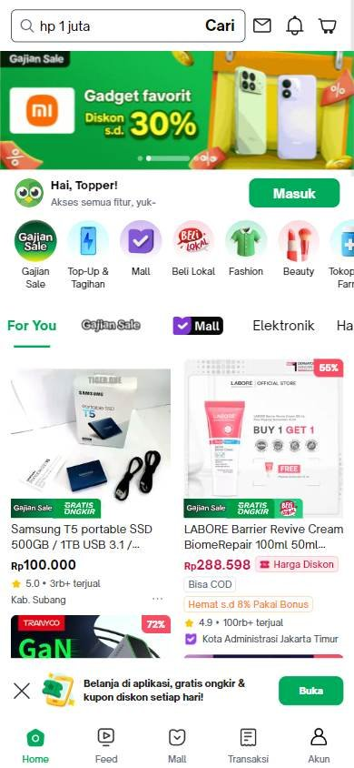

Tienda online que compite por buen precio
Los seleccionados
Los tres sitios más visitados de Indonesia, según estadísticas de tráfico.
En resumen: lo que hacen los líderes
La pantalla de inicio de cada uno

Estilo visual
Colores, imágenes, tipografía y cuánta información muestran.
Tu estilo visual debería…
- Un color de marca muy reconocible y un set de íconos de colores para los servicios.
Lo que tienen en común: Cada marketplace se identifica con un solo color fuerte (verde, naranja, azul) y usa íconos de colores para los servicios.
La paleta de cada uno
Medida sobre la primera pantalla. Los colores de marca salen del header; el resto muestra cuánto espacio ocupa cada color.
Así lo resuelve cada uno
Ficha comparativa
| Aspecto | Tokopedia | Shopee Indonesia | Blibli |
|---|---|---|---|
| Paleta | Acotada: verde + blanco | Acotada: naranja + blanco | Variada: azul + amarillo + muchos colores en promos |
| Imágenes | Fotos de producto sobre fondos de color | Fotos de producto chicas | Fotos de producto chicas |
| Esquinas | Redondeadas | Rectas | Redondeadas |
| Densidad | Media | Alta | Alta |
Header
La franja de arriba con el logo y los accesos.
Tu header debería…
- Dos botones de cuenta: «Ingresar» con borde y «Registrarse» relleno en tu color.
Lo que tienen en común: Logo a la izquierda, buscador ancho y, a la derecha, carrito con dos botones de cuenta: ingresar (con borde) y registrarse (relleno).
Así lo resuelve cada uno

Ficha comparativa
| Aspecto | Tokopedia | Shopee Indonesia | Blibli |
|---|---|---|---|
| Fondo | Blanco | Naranja de marca | Blanco |
| Logo | Verde, a la izquierda | Blanco, a la izquierda | Azul, a la izquierda |
| A la derecha | Carrito, «Masuk» (borde) y «Daftar» (verde) | Carrito, notificaciones, ayuda, registro | Carrito, «Masuk» (borde) y «Daftar» (azul) |
| Lugar de envío visible | Sí | No | No |
Buscador
La barra para buscar.
Tu buscador debería…
- Buscador ancho en el centro del header.
Lo que tienen en común: Buscador ancho en el centro del header.
Así lo resuelve cada uno

Ficha comparativa
| Aspecto | Tokopedia | Shopee Indonesia | Blibli |
|---|---|---|---|
| Estilo | Blanco con borde, lupa a la izquierda | Blanco sobre naranja, botón naranja | Gris claro, lupa a la izquierda |
| TamañoIgual en todos | Protagonista | Protagonista | Protagonista |
Primera pantalla
Lo primero que se ve debajo del header.
Tu primera pantalla debería…
- Banner con esquinas redondeadas y una fila de íconos de servicios debajo.
Lo que tienen en común: Banners con esquinas redondeadas y debajo una fila de íconos de servicios (recargas, pagos, categorías).
Así lo resuelve cada uno
Ficha comparativa
| Aspecto | Tokopedia | Shopee Indonesia | Blibli |
|---|---|---|---|
| Formato | Banner con esquinas redondeadas | Banner + banners laterales | Fila de banners con esquinas redondeadas |
| Descuento | Grande, en rojo | «100% ORI», promos | «Payday», cashback |
| Debajo | Categorías y recargas | Íconos de servicios + categorías en grilla | Íconos de accesos + promos |